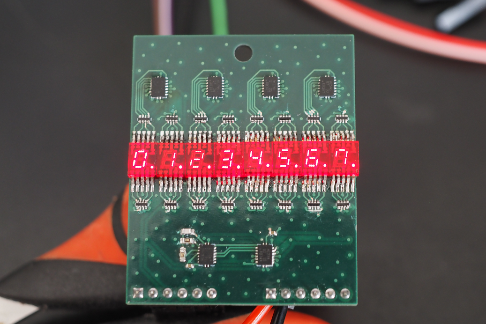
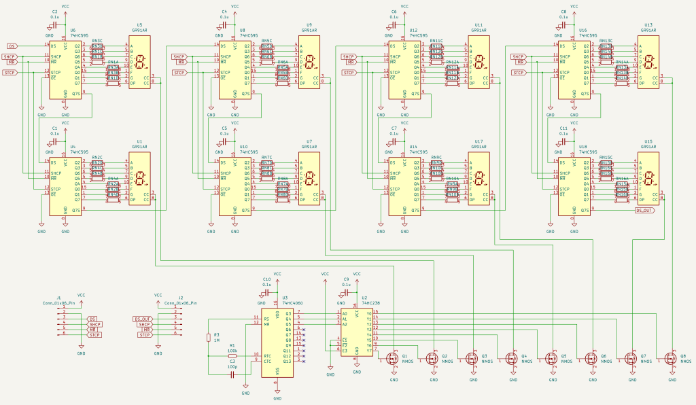
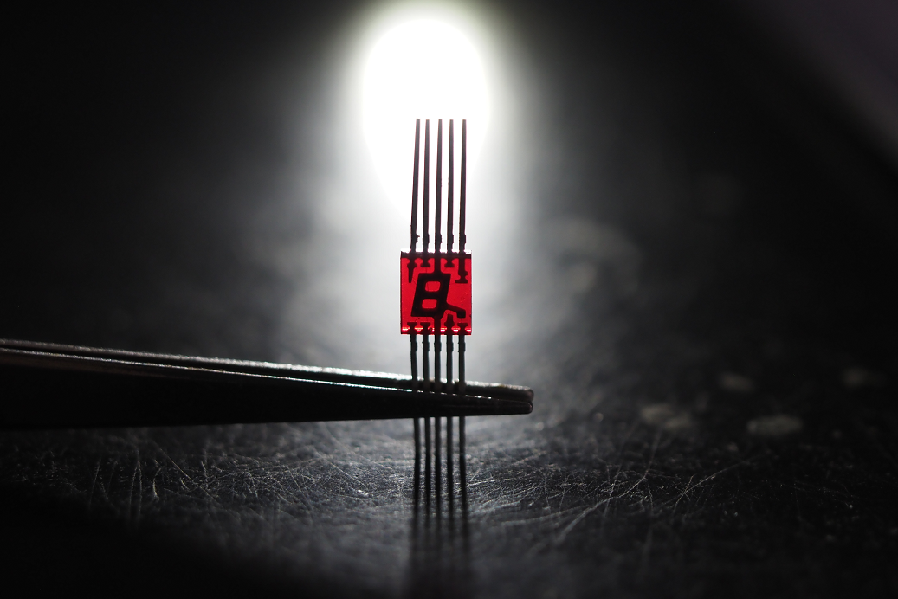
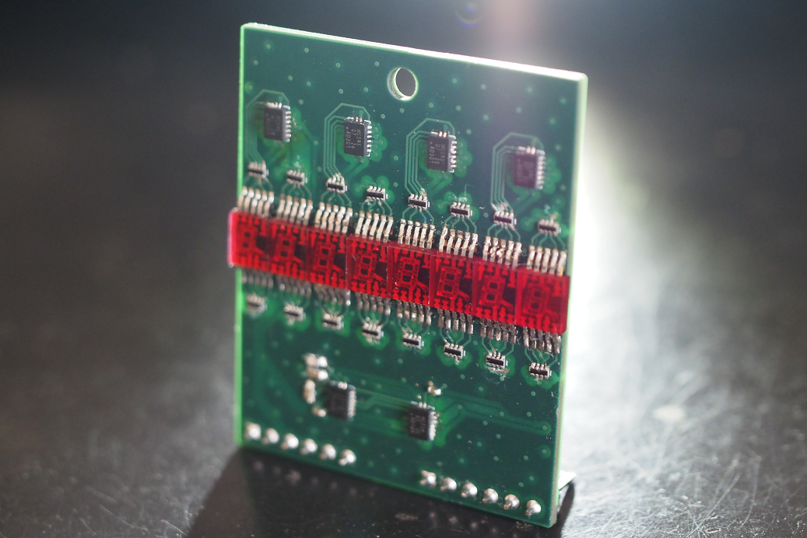
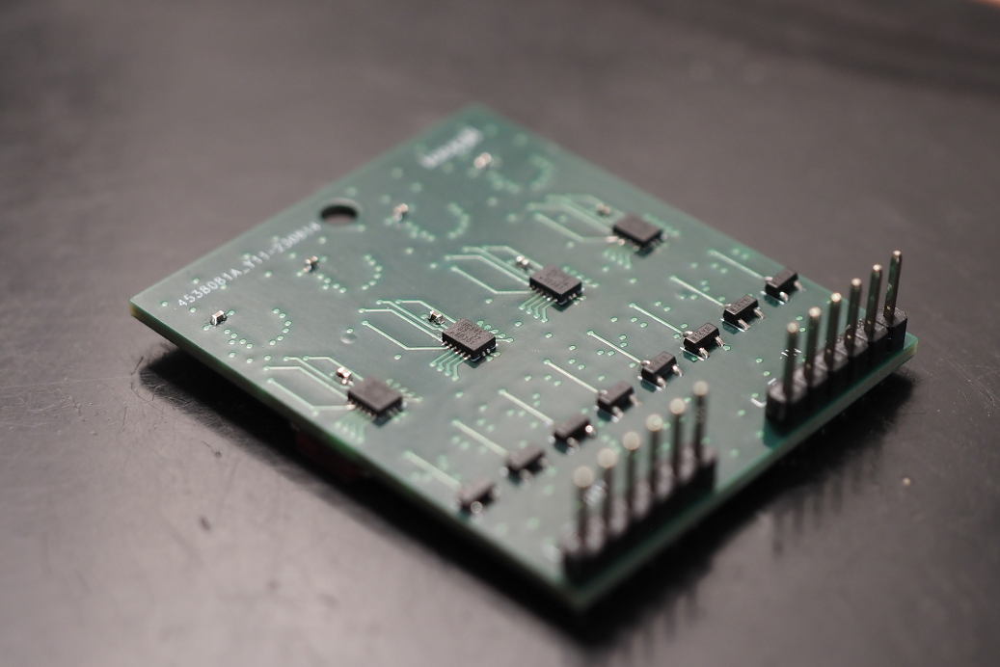

7セグメント LED をシリアルデータで制御できるようにする基板です。GL91AR というレトロな LED と、DHVQFN パッケージのロジック IC を使って小さく作りました。

8桁のGL91ARを制御する基板の写真

8桁のGL91ARを制御する基板の回路図
74HC595 というシフトレジスタを桁数分直列に接続し、シリアルデータで各桁を独立に制御できるようにしています。また、マイコン側の負担を減らすために、発振回路とカウンタ、デコーダを使ってダイナミック駆動する回路を載せています。
ロジック IC はすべて DHVQFN パッケージのものにしました。今回採用したのは Nexperia 製のもので、16個の側面パッドと裏面パッドがあります。裏面パッドはフローティングで構わない IC だったので、位置決めさえできれば手はんだでも実装可能でした。はんだ付けは B型の小手先を使って行いました。初めは D型を使っていたのですが、B型のほうがパッドと基板を同時に加熱しやすかったです。

古い表示器には独特の魅力がありますね

格安基板は加熱でレジストがはがれやすい気がする

全部のシフトレジスタを裏面にしたらもう少し小さくなったかも？